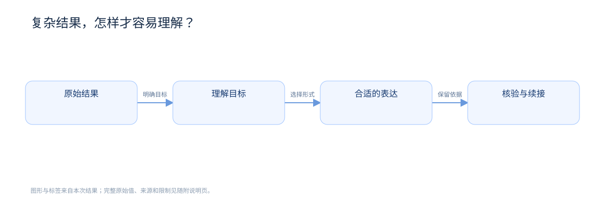

ONE RESULT. FOUR WAYS TO UNDERSTAND.
模型有了答案，
模型有了答案，
你需要看明白。
读懂结论，看清关系，找到依据。
让同一份复杂结果，拥有合适的理解入口。
实际产物 · 同一份内容 · 保留来源与限制
ONE SOURCE一份复杂结果
KEEP THE FACTS. CHANGE THE FORM.
结论 · 依据 · 限制
TRY THE ACTUAL OUTPUTS
同一份内容，换个方式看懂。
本例讲解：
复杂结果，怎样才容易理解？
01 / WRITING
阅读完整文字 ↗把意思，一句句讲清楚。
原始内容
模型完成复杂分析后，读者仍需把握结论之间的关系、核验资料与适用条件并作出下一步判断，因此需要按理解目标组织已有结果，在清晰文字、关系图解、交互网页和场景讲解视频之间选择合适的表达，同时保留原始事实、依据与限制。
信息完整，但需要自己拆分重点。清晰表达
模型给出结果。
你还需要理解结论、核验依据，
并决定下一步。
先明确需要理解什么。
再选合适的表达形式。
保留原始事实、依据和限制。
短句 · 术语一致 · 保留原意查看写作检查 →
02 / DIAGRAM
打开完整 SVG ↗让关系，出现在眼前。

先明确要看懂什么，再决定表达形式。箭头保留方向，关系都有名称。

从本次内容生成的真实图解核验来源与限制 →
03 / INTERACTIVE
全屏探索 ↗你来探索，问题在哪里。
点击“理解目标”，查看它如何决定表达；搜索内容，再切换到“核验依据”。
点击 · 搜索 · 核验 · 准备下一步任务查看完整后续任务 →
04 / VIDEO
下载 MP4 ↗跟着画面，把过程看明白。
表达形式按任务选择。本例为了比较，同时生成四种产物。
- 01
理解目标
明确看完需要分清什么。
- 02
解释与核验
结论与原始依据连在一起。
- 03
对照与反例
用具体反例照亮适用边界。
- 04
继续思考
为下一步准备完整任务。
- 05
版本更新
结果变化时先看真实差异。
- 06
理解适配
围绕当前困惑重新解释。
GROUNDED, AND OPEN TO INSPECTION
清楚的表达，也需要真实的依据。
四种表达方向参考 Karpathy 原帖 ↗。
六项能力及实现范围见 Output Presentation Skill →。
本例演示工作方式；表达清楚不能证明内容正确或用户已理解。写作模式不声明 ASD-STE100 合规；静态页准备后续任务，继续研究或重算由 Agent 完成。